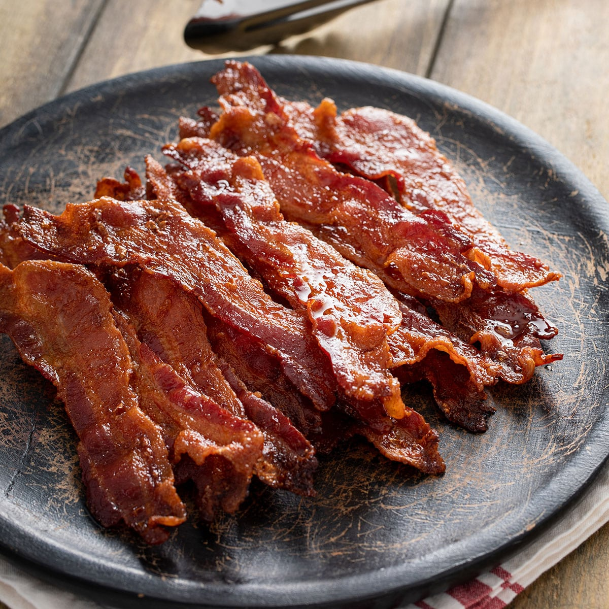

Million Dollars Bacon

A delicious bacon recipe for your family breakfast. Easy to prepare and very, very tasty!
Ingredients
- 1 pound thick-cut bacon
- 1/3 cup packed brown sugar
- 1 teaspoon crushed red pepper
- 1 teaspoon freshly ground black pepper
- 1/8 teaspoon cayenne pepper (optional)
- 1/4 cup pure maple syrup
Directions
- Gather all Ingredients
- Place oven rack in center of oven and preheat to 350 degrees F (175 degrees C).
- Line a large rimmed baking pan with foil. Place a wire rack on top of foil.
- Lay bacon in a single layer on wire rack.
- In a small bowl combine brown sugar, crushed red pepper, black pepper, and cayenne pepper, if desired.
- Rub bacon with brown sugar mixture.
- Drizzle with maple syrup. Bake until caramelized and at desire doneness, 40 to 50 minutes.
Home